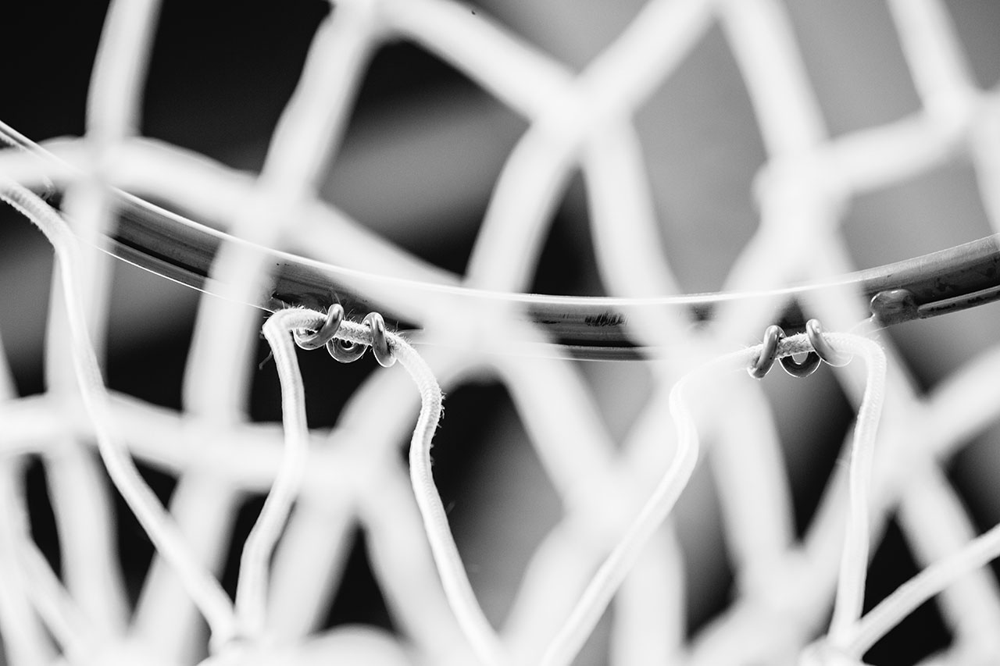

Club Baloncesto Alcorcón
Fundado en 1989 · Alcorcón, Madrid
Quiénes somos

El Club Baloncesto Alcorcón fue fundado en junio de 1989 con el nombre de Club Cinco Estrellas Alcorcón, inscrito en el Registro de Asociaciones Deportivas de la Comunidad de Madrid con el nº 2031. En la temporada 2002-2003 pasó a denominarse Club Baloncesto Alcorcón, nombre con el que se le conoce hoy.
La idea principal y actividad del club es el desarrollo y promoción del baloncesto en Alcorcón. A lo largo de más de 35 años hemos organizado torneos con equipos como el Real Madrid y el Estudiantes, y participado activamente en la vida social del municipio.
Actualmente contamos con convenios de colaboración con el Real Madrid en las categorías Infantil y Junior, y seguimos apostando por el deporte base como herramienta de educación y valores.
Únete al club
Junta Directiva (desde 2017)
| Cargo | Nombre |
|---|---|
| Presidente | José Antonio López Iglesias |
| Vicepresidente | Roberto García Molinero |
| Tesorera | Esmeralda García García |
| Secretaria | Laura Sánchez Urdiales |
| Vocal | Jesús González Díaz-Cano |
Instalaciones deportivas
Gracias a un convenio con el Ayuntamiento de Alcorcón, el club dispone de las siguientes instalaciones polideportivas municipales:
| Instalación | Dirección |
|---|---|
| Polideportivo Los Cantos | C/ de los Cantos, 28 — 28922 Alcorcón |
| Polideportivo Canaleja | Av. Circunvalación Norte, 1 — Alcorcón |
| CEIP Fuente del Palomar | C/ Camilo José Cela, 2 — 28922 Alcorcón |
| Centro Deportivo Amanecer | Av. Pablo Iglesias, 6 — 28922 Alcorcón |